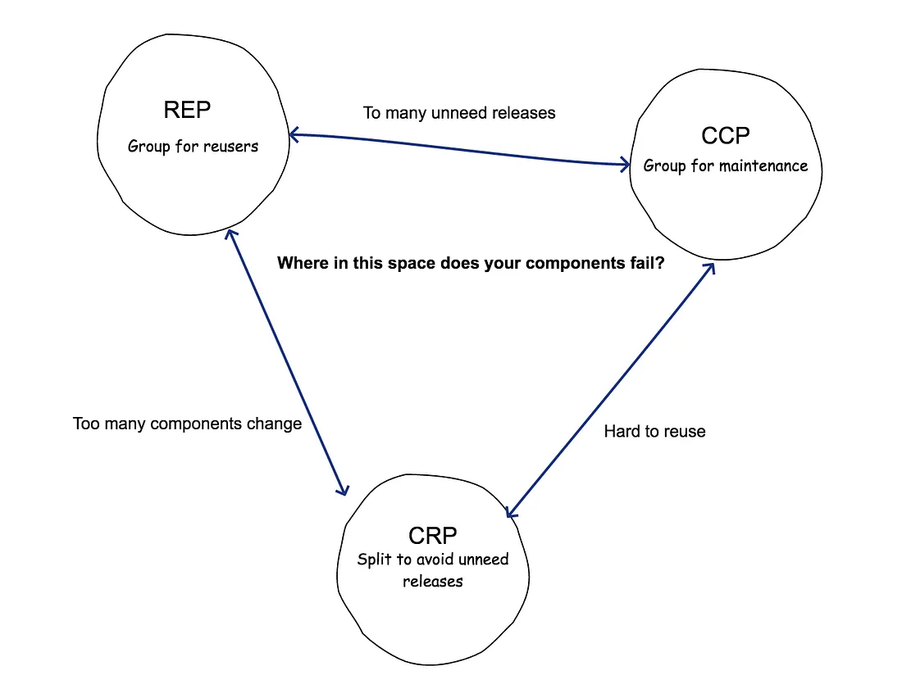
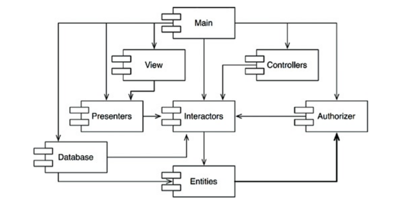
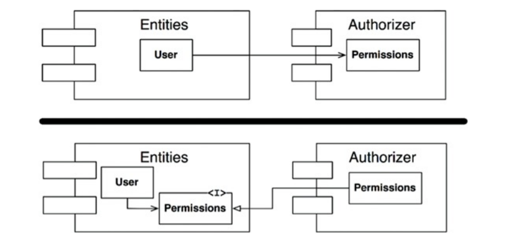
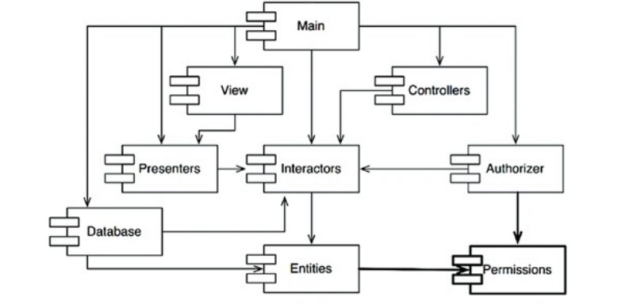
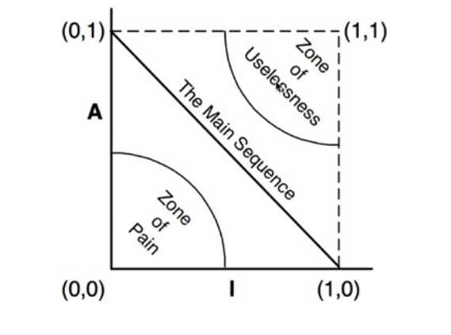

Component principles
Quick recap
- SOLID, at the level of one class
- The data model, and claiming a protocol
The claim
A class is not a unit of delivery. You do not ship a class — you ship a component, and it has its own principles.
Six rules, and every one of them is about a line you cannot see in any source file: the boundary between what ships together and what ships apart.
Agenda
- What a component is
- Cohesion: REP, CCP, CRP — and the tension between them
- Coupling: ADP, SDP, SAP
- Measuring a real code base
What is a component
A modular, self-contained, independently deployable unit of software.
- A physical artifact: a
.jar, a.dll, a wheel, a packaged JS library - Standard interface, internals hidden, assembles with others
- A folder is not a component. A thing you can version and release is.
The test: can you give someone this and nothing else, and can they use it?
Components are products
Calling it a deployment unit undersells it. A component is a unit of productisation, which means somebody owes its consumers:
- versioning and release management
- communication when something changes
- stability, and support for the version they are on
That shifts the question from "can I share this code?" to "am I prepared to maintain this for other people?"
What a good one looks like
| Reusable | works in more than one context without modification |
| Encapsulated | internals hidden, only stable interfaces exposed |
| Independent | few dependencies, so it can be built and deployed alone |
| Replaceable | swappable for another implementation that honours the interface |
Cohesion and coupling
The two forces, at every level of design.
- Cohesion — how well the things inside belong together
- Coupling — how much one component depends on another
Maximise the first, minimise the second. And note the relationship: high cohesion tends to produce loose coupling on its own, because a component that owns one job has less to ask of anyone else.
Cohesion is a spectrum
| Type | Grouped by | Example |
|---|---|---|
| Coincidental (worst) | nothing | CommonUtilities |
| Logical | same category, unrelated work | InputHandler for keyboard, mouse, network |
| Temporal | happens at the same time | shutdown routines |
| Procedural | execution order | AppInitializer: check licence, load prefs, connect |
| Communicational | the same data | CustomerManager: address update, order history |
| Sequential | output feeds the next | ReportGenerator: fetch → aggregate → format |
| Functional (best) | one task | PaymentProcessor: validate, authorize, capture |
utils is not a name. It is an admission that no one could think of one.
Coupling is also a spectrum
| Type | What crosses the boundary | Example |
|---|---|---|
| Content (worst) | reaching into internals | modifying another component's variable |
| Common | shared global state | a global Configuration |
| External | a specific technology | Oracle-specific SQL |
| Control | a flag that steers logic | sort(data, directionFlag) |
| Stamp | a whole object, partly used | Mailer(User) needing only email and name |
| Data (best) | primitives | TaxCalculator(price, region) |
Cohesion: which classes belong together
Three principles, and they pull against each other.
REP — Reuse/Release Equivalence
The granule of reuse is the granule of release.
The smallest thing someone can reuse must be the smallest thing you release and track.
Copy-paste is not reuse. Copies diverge; your bug fix never reaches them. Reuse means depending on a versioned artifact, which implies semantic versioning, release notes, and somebody telling consumers what changed.
implementation 'org.springframework:spring-core:5.3.23' # Maven
"react": "^18.2.0" # npm
pod 'Alamofire', '~> 5.6' # CocoaPods
Every package manager you have used is REP, enforced by tooling.
CCP — Common Closure
Gather into a component the classes that change for the same reasons, at the same times. Separate those that do not.
This is the Single Responsibility Principle, one level up: a component should have one reason to change.
What it buys:
- a change for one requirement stays inside one component
- only that component is rebuilt, retested, redeployed
CRP — Common Reuse
The classes in a component are reused together. If you reuse one, you reuse them all.
The other side: do not force consumers to depend on things they do not use. This is Interface Segregation at the component level — ISP warns against fat interfaces, CRP warns against fat components.
Two costs when you get it wrong:
- Dependency bloat. A consumer who needs one class inherits the component's entire dependency tree — bigger builds, more version conflicts.
- Release churn. Mix a volatile class with stable ones and every consumer gets a new release, and has to re-validate, for a change they do not use.
They pull against each other
- CCP says group more — keep things that change together in one place
- CRP says group less — do not make me depend on what I do not use
- REP sits between them, and says whatever you decide must be releasable
There is no arrangement that maximises all three.
The tension diagram

Each edge is the price of giving up the principle at the opposite corner:
| You sit on this edge | You abandoned | And you get |
|---|---|---|
| REP — CCP | CRP | too many unneeded releases |
| REP — CRP | CCP | too many components change at once |
| CCP — CRP | REP | components nobody can reuse |
You are always somewhere inside this triangle. The question is not how to escape it but which of the three failures you can currently afford.
Early in a project, CCP wins: easy change matters more than troubling consumers you do not have yet. As a component matures and gains consumers, the balance shifts toward CRP.
Where in this space do your components fail?
Coupling: which way the dependencies point
ADP — Acyclic Dependencies: the problem
Friday: working code. Monday: broken build. You changed nothing.
Someone edited a component you depend on.
The morning-after syndrome. On a big team, nobody works on what they planned to.
First attempt: integrate on Fridays
Develop in isolation all week. Integrate Friday.
It works — four quiet days, one noisy one.
Then the project grows:
| Changes to reconcile | Friday takes |
|---|---|
| a handful | an hour |
| dozens | all day |
| too many | Saturday too |
The trap
Friday hurts → integrate fortnightly → bigger batches → hurts more → integrate monthly.
The fix accelerates the problem it was introduced to solve.
Wrong question: how often do we integrate? Right question: why is integrating expensive?
Because you are integrating source
Everyone's latest code, all at once, whether you wanted it or not.
Integrate released components instead:
- a team ships a component with a version number
- others keep the version they have
- they upgrade when they choose
No team is at the mercy of another.
Requires one thing: no cycles.
Cycles

A cycle means the components "have, in effect, become one large component."
- they cannot be released independently
- they cannot be unit tested in isolation
- there may be no correct build order at all
Two ways out
1. Invert one dependency. Put an interface in the lower-level component that the higher-level one depends on.

2. Extract a new component. Move what both need into a third thing they both depend on.

SDP — Stable Dependencies
Depend in the direction of stability.
"Stable" here does not mean good or unchanging by nature. It means hard to change, because many things depend on you.
| Unstable | Stable | |
|---|---|---|
| Incoming dependencies | few | many |
| Outgoing dependencies | many | few |
| Changing it | easy, nothing breaks | expensive, everything breaks |
| Martin's phrasing | "irresponsible and dependent" | "responsible and independent" |
Examples
| Stable — many depend on it | Unstable — it depends on many |
|---|---|
| the standard library | main() / the entry point |
| a logging interface | a UI screen |
core entities: Order, Customer |
a report generator |
a shared Money or Date type |
a one-off migration script |
| a database schema several services read | the test suite |
Stability is about position in the dependency graph, not code quality. A stable component can be badly written. An unstable one can be excellent.
The instability metric
| Fan-in | classes outside that depend on this component |
| Fan-out | classes inside that depend on something outside |
| I | fan-out ÷ (fan-in + fan-out), range 0 to 1 |
- I = 0 — maximally stable. Everyone depends on it, it depends on nobody
- I = 1 — maximally unstable. Nobody depends on it, it depends on everyone
The rule: I should decrease in the direction of dependency. A component must
depend only on components more stable than itself.
Violation: a core DatabaseLayer depending on a volatile UI. Change the UI and the
database code rebuilds.
SAP — Stable Abstractions
A component should be as abstract as it is stable.
If a component is hard to change, it had better be extendable instead. That means abstract classes and interfaces — extended without being modified.
| A | abstract classes and interfaces ÷ total classes |
| A = 0 | entirely concrete |
| A = 1 | entirely abstract |
Together, SDP and SAP are the Dependency Inversion Principle at component scale: dependencies run in the direction of abstraction. The difference from the class-level version is that a component can be partly abstract and partly stable.
The main sequence, and two places not to be

A component should sit near the line A + I = 1. Distance from it: D = |A + I − 1|.
| Zone | Where | Why it hurts |
|---|---|---|
| Zone of Pain | A≈0, I≈0 — concrete and stable |
rigid: cannot extend it, cannot change it |
| Zone of Uselessness | A≈1, I≈1 — abstract and unstable |
abstractions nobody implemented |
D finds candidates. It does not rank them — a concrete, stable component that nothing
much depends on is a quiet afternoon's work, while the same score on something with
nine dependents is not. Read D to find them, fan-in to rank them.
💬 Five components. Which one do you fix first?
| Component | fan-in | fan-out | abstract classes | total classes |
|---|---|---|---|---|
domain |
8 | 0 | 0 | 10 |
ui |
0 | 5 | 0 | 6 |
interfaces |
6 | 0 | 5 | 5 |
legacy_utils |
1 | 0 | 0 | 4 |
plugins_api |
0 | 1 | 4 | 4 |
- Compute I, A and D for each.
- Which zone is each in?
- Which one do you fix first, and why?
Answer
| Component | I | A | D | Where |
|---|---|---|---|---|
domain |
0.00 | 0.00 | 1.00 | Zone of Pain |
ui |
1.00 | 0.00 | 0.00 | main sequence |
interfaces |
0.00 | 1.00 | 0.00 | main sequence |
legacy_utils |
0.00 | 0.00 | 1.00 | Zone of Pain |
plugins_api |
1.00 | 1.00 | 1.00 | Zone of Uselessness |
Three components score D = 1.00. They are not equally urgent.
domainfirst. Eight dependents, fully concrete. Cannot be extended, and every change reaches eight other components.legacy_utilscan wait. Same zone, but one dependent. Fixing it costs one conversation.plugins_apiis a different problem. Four abstract classes and nobody uses them. Not rigid — just unused. Delete or implement.
ui and interfaces are both on the main sequence, at opposite ends: one
unstable and concrete, one stable and abstract. Both are correct.
D finds the candidates. Fan-in decides the order.
The six, in one place
| Principle | Says | Class-level twin | |
|---|---|---|---|
| REP | Reuse/Release Equivalence | the unit of reuse is the unit of release | — |
| CCP | Common Closure | group what changes together | SRP |
| CRP | Common Reuse | do not force unused dependencies | ISP |
| ADP | Acyclic Dependencies | no cycles | — |
| SDP | Stable Dependencies | depend toward stability | — |
| SAP | Stable Abstractions | be as abstract as you are stable | DIP |
The first three decide what goes inside a component. The last three decide how components point at each other.
References:
- Chapters 13–14, Clean Architecture — Robert C. Martin
- Component cohesion principles
- The full-stack software design & architecture map